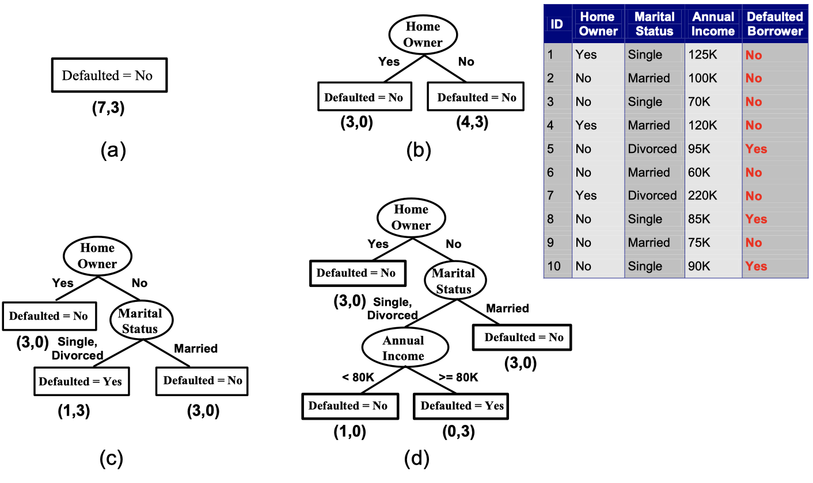
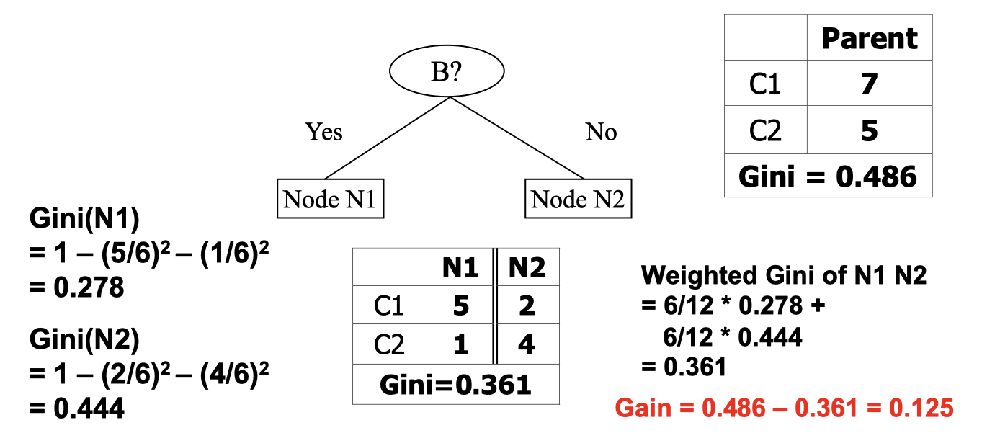
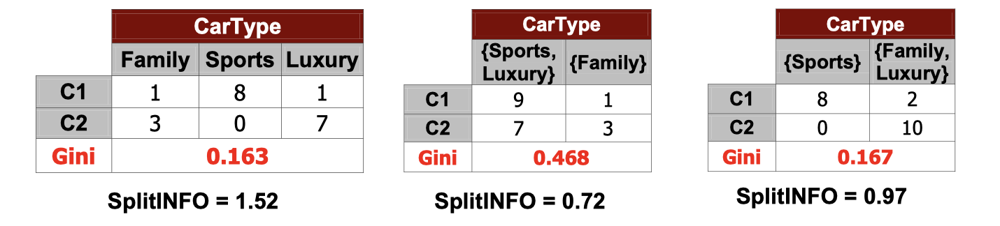
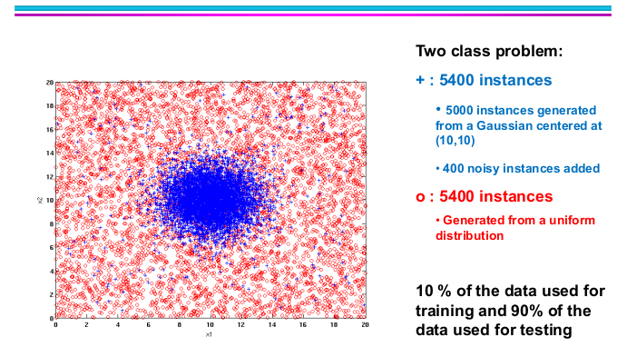
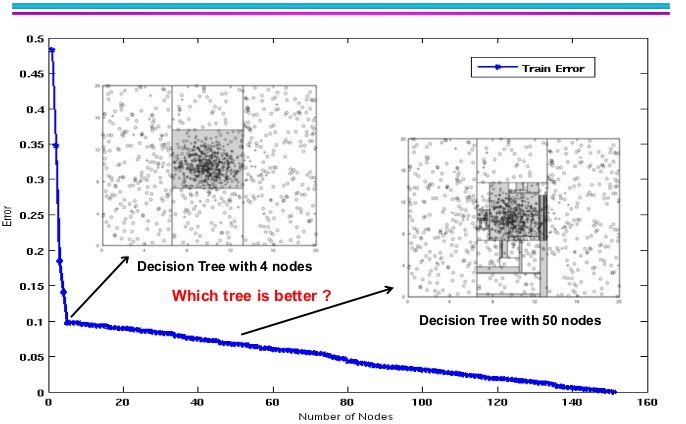
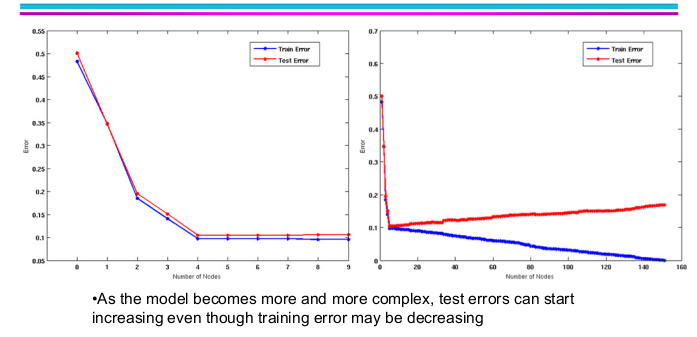
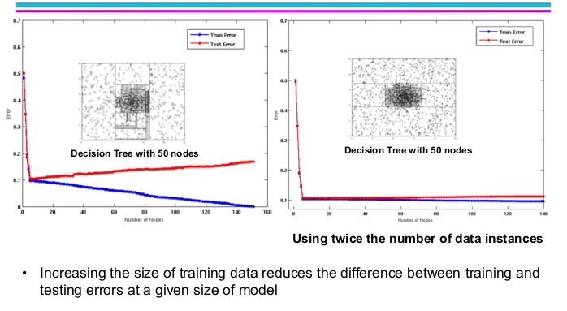
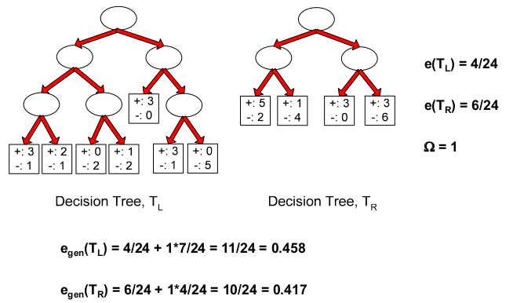
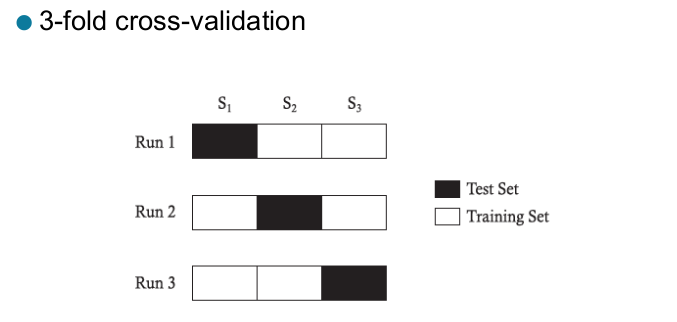

Data Mining: Classification with Decision Tree
Acknowledgement: This course (CSCI 5523) is being offered by Prof. Vipin Kumar at the University of Minnesota in Fall 2020.
Base Classifiers
- Decision Tree based Methods
- Rule-based Methods
- Nearest-neighbor
- Neural Networks, Deep Neural Nets
- Naive Bayes and Bayesian Belief Networks
- Support Vector Machines
Ensemble Classifiers
- Boosting, Bagging, Random Forests
Decision Tree
Decision Tree Induction Algorithms
- Hunt’s Algorithm (one of the earliest)
- CART
- ID3, C4.5
- SLIQ,SPRINT
Hunt’s Algorithm

As you may see in the picture, a Hunt’s Algorithm in decision tree is to define a condition to split data into two or more branches when a node is not pure (involving both labeled classes), until the leaf node has all the data with the same class. Now with this model, we might ask how do we determine the best spiltting. Therefore, some evaluation metrics may come into place.
Measures of Node Impurity
First, we have to know what is node impurity. If a node has 10 data points in total, and 5 of them are labeled class 1 and 5 of them are labeled class 0, then it has a high degree of impurity. But if a node has 9 data points labeled class 1 and only 1 data point labeled class 0, then we say it has a low degree of impurity. People have designed methods to measure node impurity. There are three most popular ones:
- Gini Index
where is the frequency of class
at node
, and
is the total number of classes
- It has a minimum of 0 when all records belong to one class, which is the most beneficial situation for classification.
- It has a maximum of $1 - \frac{1}{c}$ when records are equally distributed among all classes, which is the least beneficial situation.
- It's used in decision tree algorithems such as CART, SLIQ, SPRINT
- Entropy
- It has a minimum of 0 and a maximum of $log_2c$.
- Entropy based computations are quite similiar to the GINI index computations.
- Misclassification Error
How to find the best split?
- Compute Impurity Measure (
) before splitting
- Compute Impurity Measure (
) after splitting
- Choose the attribute test condition that produces the highest gain
Particularlly, when we say information gain, it implies the Gain of Entropy method.
where Parent Node is split into
partitions (children);
is number of records in child node
.
Let’s look at a simple example.

I think this image is straighforward. At this point we may naturally think of the more partitions we have, the more likely we’ll end up with a lower degree of impurity, but does it mean the more partitions the better? No, it’s not always meaningful to do so. For instance, if we classify each customers by ID, it doesn’t do anything or give us any useful information, so we want to have a measure that will penalize too many successors.
Gain Ratio (for Entropy)
Where parent node is split into
partitions, and
is the number of records in child node
- Split Info happends to be larget if too many successors, this is a way to prefer small number of successors.
- This is degisned to overcome the disadvantage of information gain
- Used in C4.5 algorithm

One of the senarios of applying split info may be the image above. We see that the left most split and the right most split has a similiar value of Gini Index, but the right most one has a much lower split info so that we would go with the lower successors split.
The Pros and Cons of Decision Tree Based Classification
Advantages:
- Relativelty inexpensive to construct
- Extremely fast at classifying unkown records
- Easy to interpret for small-sized trees
- Robust to noise (especially when methods to avoid overfitting are employed)
- Can easily handle redundant or irrelevant attributes (unless the attributes are interacting)
Disadvantages:
- Due to the greedy nature of splitting criterion, interacting attributes (that can distinguish between classes together but not individually) may be passed over in favor of other attribtues that are less discriminating
- Each decision boundary involves only a single attribute
Classification Errors
- Training errors
- Test errors
- Generalization errors: expected error of a model over random selection of records from same distribution

Let’s look at this example above. The positive class is from a gaussian centered at (10,10) with 400 noisy instances added.

If we only use 10% of dataset to train a decision tree, it will end up with a tree with 4 nodes as the picture above. While we increase the size of training dataset, the training error continues to goes down slowly, and we might have a decision tree with more nodes. But doesn’t it really improve our model’s performance?

Actually not! As the model becomes more and more complex with larger training set, the test error starts to go up. This is what we called overfitting.
- Underfitting: when model is too simple, both training and test errors are large.
- Overfitting: when model is too complex, training error is small but test error is large.

What if we increase the size of the model while we have a overfitting model? The anwser is that both the training errors and test error would go down as the image above.
At this point, let’s summurize the possible reasons for model overfitting.
- Limited training size
- High model complexity: have something to do with multiple comparision procedure
Notes on overfitting
- Overfitting results in decision trees that are more complex than necessary
- Training errors does not provide a good estimate of how well the tree will perform on previously unseen records
- Need ways for estimating generalization errors
Model Selection
Purpose: to ensure that model is not overly complex (to avoid overfitting)
Goal: to estimate generalization error
- Using validation set
- Incorporating model complexity
Using validation set
- Diving training data into two parts
- Training set: use for model building
- Validation set: use for estimating generalization error
- Drawback:
- Less data available for training
Incorporating model complexity
Purpose: use some model complexities while building a model with training set.
This is to 1) reduce training set error and 2) add penalty to increasing complexity simultaneously.
Gen.Error(Model) = Train.Error(Model,Train.Data) + x Complexity(Model)
Estimating the Complexity of Decision Trees
Pessimistic Error Estimate of decision tree with
leaf nodes.
: error rate on all training records (number of error divived by the total training examples)
: trade-off hyper-parameter (similar to
)
- relative cost of adding a leaf node
: number of leaf nodes
: total number of training records
Let’s look at an example:

How to calculate ?
For example, if a leaf node has 3 positive and 1 negative, then the negative case is an error case. Applying the same through to all the leaf nodes will give you the total number of error cases. The other parts of this formula is straightforward in the image above.
Model selection for decision trees
Pre-Pruning (Early Stopping Rule)
- Stop the algorithm before it becomes a fully-grown tree
- Typical stopping conditions for a node:
- stop if all instances belong to the same class
- stop if all the attribute values are the same
- More restrictive conditions:
- stop if number of instances is less than some user-specified threshold
- stop if class distribution of instances are independent of the available features (e.g., using
test)
- stop if expanding the current node does not improve impurity measures (e.g., Gini or information gain)
- stop if estimated generalization error falls below certain threshold
Post-pruning
- Grow decision tree to its entirety
- Subtree replacement
- Trim the nodes of the decision tree in a bottom-up fashion
- If generalization error improves after trimming, replace sub-tree by a leaf node
- Class label of leaf node is determined from majority class of instances in the sub-tree.
Model Evaluation
Purpose:
- To estimate performance of classifier on previously unseen data (test set)
Holdout
- Reserve k% for training and (100-k)% for testing
- Random subsampling: repeated holdout
Cross validation
- Partition data into k disjoint subsets
- k-fold: train on k-1 partitions, test on the remaining one
- Leave-one-out: k = n
If I only have a small number of dataset, and use too much for test set, then I don’t have enough data for training. I don’t want my model with biases toward how I train my model. What should I do?
Cross-validation Example

- Repeated cross-validation
- perform cross-validation a number of times
- gives an estimate of the variance of the generalization error
- Stratified cross-validation
- Guarantee the same percentage of class labels in training and test
- Important when classes are imbalanced and the sample is small
- Use nested cross-validation approach for model selection and evaluation